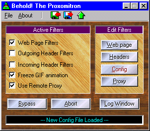

Except for the default background textures, here's something like what you'll see when you first run the Proxomitron (this gives you an idea how much effect different textures have on the look of the program).

(Click on an item above for help on what it does!)
Proxomitron config files
Instead of using .ini files or the system registry to store its settings, the Proxomitron uses config files (ending in .cfg). When the Proxomitron first loads, it looks for a file named "default.cfg" in the program's directory - this is where all initial settings are kept. You can save other config files under different names however, to quickly switch between various setups. You can even give each configuration its own background textures to help make them more distinctive. Use the file menu (or right click over the main window) to bring up options to load and save the config files.
The configuration files are just simple text files and can be edited by any text editor (like Notepad). An easy way to email someone a filter you designed or post it on the web, is simply to copy it from the config file.
Loading new config files
By loading a new config file you can completely change the way Proxomitron filters. For example, you could keep several configs each with a different level of filtering. Proxomitron now comes with six sets of configs (labeled Level 1 to Level 6). Level 1 uses the least amount of filtering and Level 6 the most. You can adjust any of the configs to suit your taste and save the changes. If a page is causing trouble and you don't want to bypass all filtering, you could just load a less aggressive config.
Proxomitron provides several ways to load config files. Here's rundown of them all...
- From the "File" option on Proxomitron main menu.
- By selecting "Load Config File" from the System Tray menu.
- By dragging and droping a config file onto Proxomitron's main window.
- By passing a config on Proxomitron's command line (note: this will work even if Proxomitron's already running. In fact you can create multiple shortcuts to different configs and place them in an easy to access spot like the taskbar - even assign hotkeys to them).
- Via a the "load" URL Command (You can even use this to have a bookmark or "Favorites" entry automatically load a config before going to the web page).
Merging Config files
Filters from one config file can be merged into the current config file by selecting "Merge config files" from the main screen's "File" menu. This can come in useful when updating a config with new filters, or moving your custom made filters to a new set.
Special Information URL
Proxomitron maintains useful informiation about it's current state including current config, recently loaded URLs, and blockfile information which can be access from your browser at the following special URL...
(Note that this is also a quick way to test if you have your browser's proxy set up correctly to use Proxomitron - otherwise these pages will not be available.)
Types of filters
The Proxomitron has several categories of filters - Web filters, Incoming header filters, Outgoing header filters, and a .GIF file animation filter. Each set of filters can be quickly disabled by un-checking the corresponding "Active Filters" check box.
- Web filters affect the HTML of loading web pages.
- Outgoing filters affect request HTTP header messages sent from your browser to the Internet.
- Incoming filters affect reply HTTP header messages sent from the Internet to your browser.
- "Freeze .GIF animation" filter loads only the first image of an animated .GIF
The "Abort" button will stop all current connection and resets the Proxomitron. It works like the stop button on your browser. Normally you only need use it if for some reason a connection refuses to die.
The "Bypass" button temporarily suspends all filters. By pressing Bypass then forcing your browser to reload a web page, you can see the page in its original unfiltered form. Use this if a filter accidentally removes something you didn't intend from a web page.
Note: Many Browsers don't always really reload when you press the "reload" button. Often they first "ask" the web page's server if the page has changed. If not, the browser uses the copy it already has stored in its cache. The Proxomitron will normally detect a browser reload and force the page's HTML to reload anyway - allowing you to see the effects of filter changes. However for some things, like animated .GIFs you must "force" your browser to reload the entire page.
Netscape: Hold down Shift and click Reload or press Shift+Control+R.
Internet Explorer: Hold Control and select View->Refresh from the menu or press Control+F5. Note this only works for version 4.x and above!
One way to always force a reload no matter what is to leave the "If-Modified-Since" and "Last-Modified" header message filters enabled, and only bypass web page filters. Be warned however, this makes your browsers cache very inefficient!
 Return to main index
Return to main index